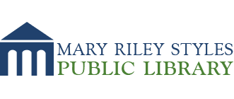
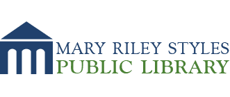

Welcoming Falls Church celebrates the efforts of many like-minded people in the community to welcome immigrants and refugees. Local government authorities; community and civic organizations; churches, synagogues, and mosques; and perhaps most importantly individuals and families who befriend neighbors, acquaintances, classmates, are engaging international residents of our community and making welcoming work.
We are fortunate to live in a community where most residents profess positive sentiments towards immigrants and refugees. The Greater Falls Church area is remarkably diverse, and becoming more so, offering us all everyday opportunities for us to connect with the world, close to home.
Public-Private Collaboration. Welcoming America encourages grassroots organization through public-private partnerships that connect to city or county governments.
 Welcoming Falls Church has been delighted to partner with the City of Falls Church since organizing our first activities in 2018. The City Council has recognized Welcoming Week with resolutions in 2018 and 2019; we have gotten to know many of the City's Parks & Recreation Department colleagues as we've planned activities;

we have been delighted to collaborate with the Mary Riley Styles Public Library for Welcoming Week 2019 and to co-sponsor youth book clubs; and we have been invited by the City to offer ideas about how the new City Hall might be more welcoming. Many thanks to the City and its welcoming spirit!
Welcoming Falls Church has been delighted to partner with the City of Falls Church since organizing our first activities in 2018. The City Council has recognized Welcoming Week with resolutions in 2018 and 2019; we have gotten to know many of the City's Parks & Recreation Department colleagues as we've planned activities;

we have been delighted to collaborate with the Mary Riley Styles Public Library for Welcoming Week 2019 and to co-sponsor youth book clubs; and we have been invited by the City to offer ideas about how the new City Hall might be more welcoming. Many thanks to the City and its welcoming spirit!
In addition, we look forward to connecting more over time with the Fairfax County authorities. We held a great program in September 2019 that featured author Imbolo Mbue at a public talk at Fairfax County's Tysons-Pimmitt Public Library (down the street from where Imbolo Mbue lived, when she was in the area!). We look forward to getting to know counterparts - particularly in the Mason, Dranesville, and Providence Districts of Fairfax County - as we understand and work together to make all of Falls Church a more welcoming community.
Partners. In order to mobilize our community, we're connecting with like-minded organizations and their leaders and members. We are delighted to have entered into partnerships with the Falls Church City Public Schools and the Falls Church Education Foundation. We thank our FCCPS and FCEdF colleagues for collaboration. In addition, we are delighted to work with two organizations - Spend Yourself Food Pantry, whose goal is to help the hungry and build relationships in a warm and welcoming environment - and Comunidad, a new and locally-rooted non-profit serving the Seven Corners and Culmore communities.
Youth & Local PTAs. One highlight of local support was when the 5th grade GIVE Day student ambassadors at Thomas Jefferson Elementary School selected Welcoming Falls Church as their local partner last January. The GIVE Day volunteers - hundreds of kids! - then created a large "mosaic" community art project with a welcoming theme, that they then presented to the City of Falls Church at a City Council meeting. We love working with local PTAs. What could be more grassroots?
 We can't thank the Falls Church Elementary PTA enough for their development of this great project and willingness to partner with us long-term. Likewise, we thank the Mary Ellen Henderson Middle School for their consistent and enthusiastic support - and likewise for their membership's vote to make us a long-term partner.
We can't thank the Falls Church Elementary PTA enough for their development of this great project and willingness to partner with us long-term. Likewise, we thank the Mary Ellen Henderson Middle School for their consistent and enthusiastic support - and likewise for their membership's vote to make us a long-term partner.
 We are honored to work with you and so many of your families. And we look forward to working with the young people of Falls Church more and more. We are inspired by our youth to build a community of neighbors in real, practical ways!
We are honored to work with you and so many of your families. And we look forward to working with the young people of Falls Church more and more. We are inspired by our youth to build a community of neighbors in real, practical ways!
Media and Podcasts. We recognize how important it is to reach the community through media and podcasts. Local community access network FCCTV filmed author Imbolo Mbue’s Fall 2019 talk, the Falls Church News-Press has written about us (see here), and Falls Church resident Erin Keating has created a great podcast about books, Three Way, that featured Imbolo Mbue’s talk (see here) and will regularly feature other books we recommend. Check out Three Way here – both for books we’re suggesting to the community and generally – and thank you Erin for your support!
Supporters and Event Sponsors. We also thank the many supporters that make our work possible generally – and in particular those that helped cover the costs of bringing Behold the Dreamers author Imbolo Mbue to Falls Church for Welcoming Week 2019.
We are very happy to recognize the following donors:
Supporters ($500 to $1500)
Event Sponsors ($100 to $499)
Continued Support
We also ask if you would consider supporting us financially through a tax-deductible charitable contribution. Checks can be made out to Welcoming Falls Church, and provided to us at one of our public events, or mailed to 605 Fulton Avenue, Falls Church, VA 22046; or donate online here:
{% include paypal_button.html %}